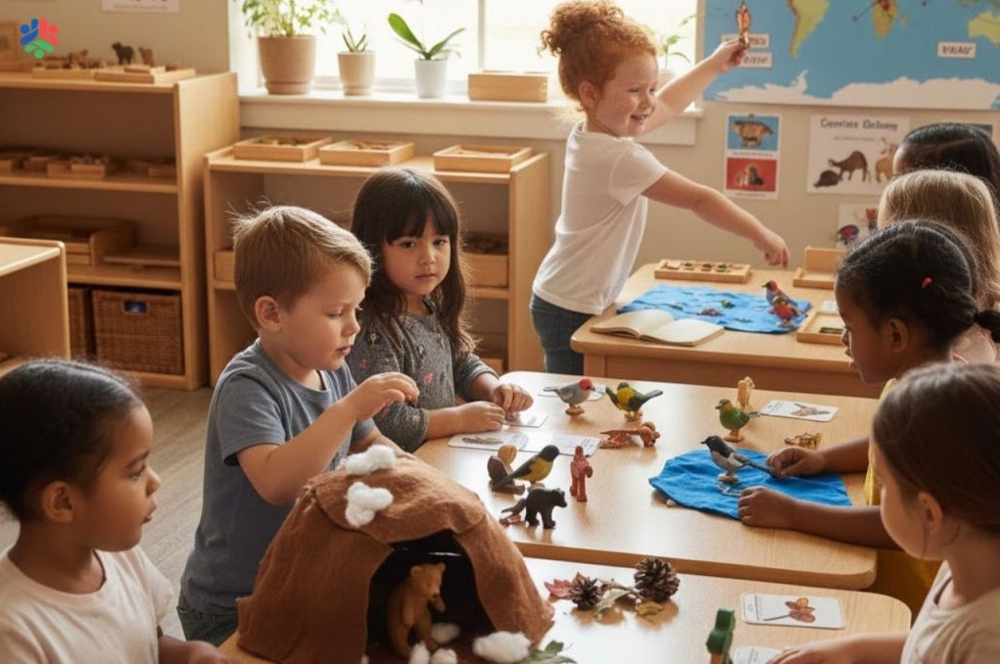
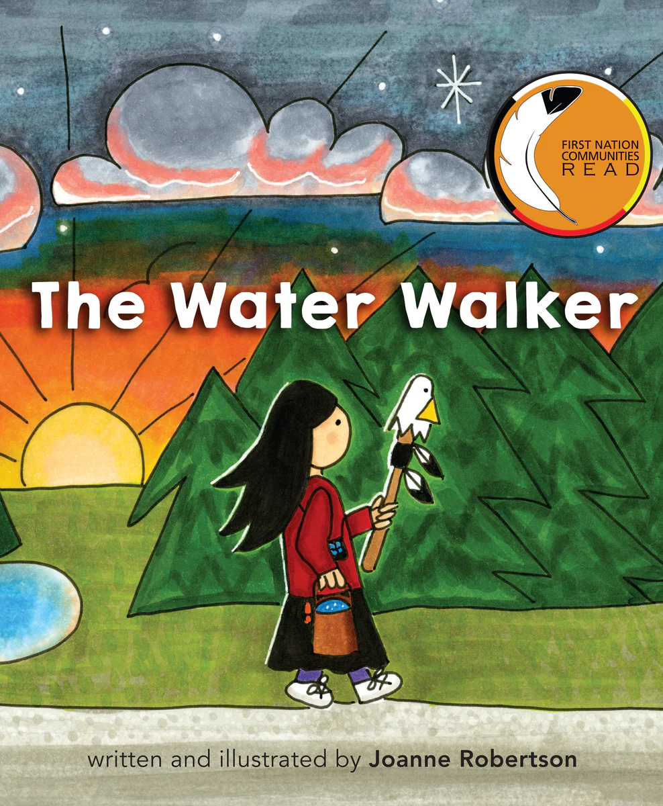
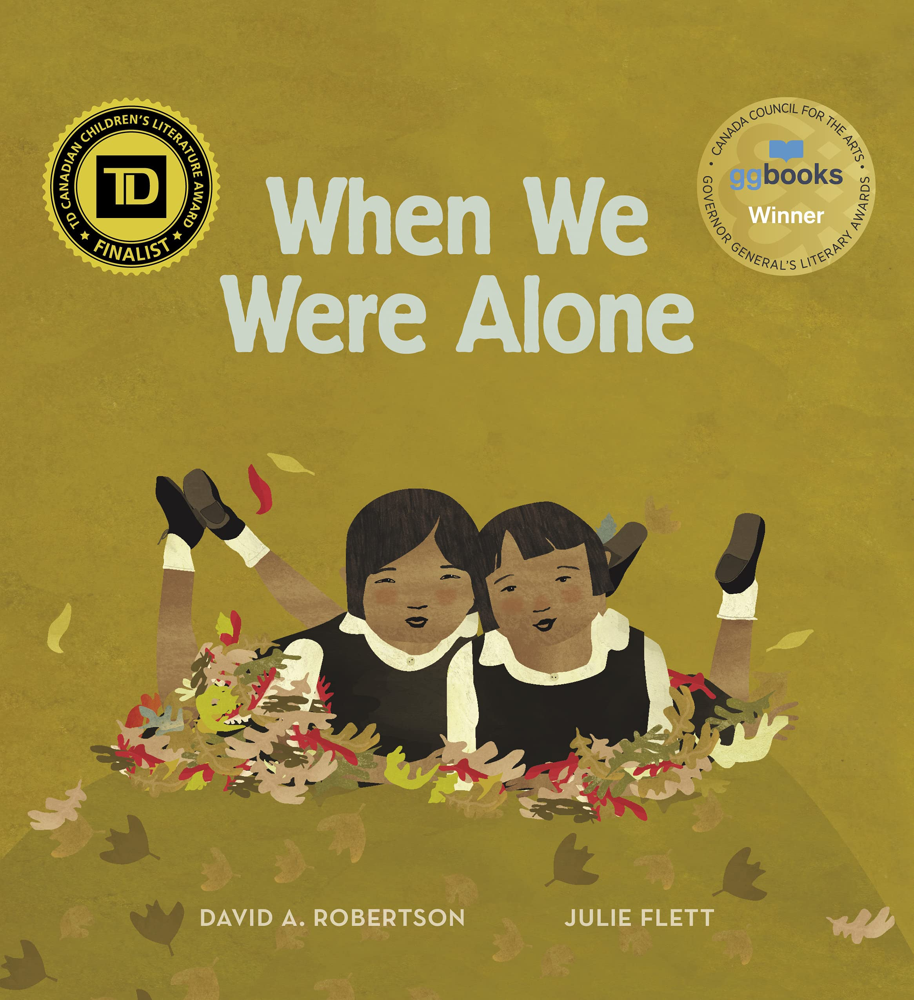
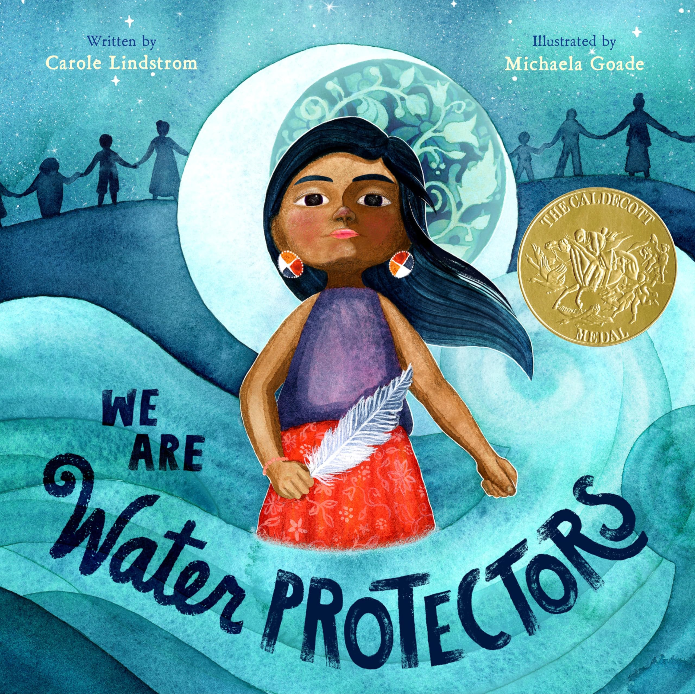

Classroom & Early Childhood Applications
Storytelling can be thoughtfully woven into everyday classroom and early childhood practice through books, materials, music, discussion, and experiences connected to the land. In these settings, storytelling is not treated as a simple teaching tool, but as a relational and meaningful way of learning with children, grounded in Indigenous pedagogies that emphasize connection, reflection, and responsibility (Archibald, 2008; see References).
These applications highlight that storytelling is not only about sharing narratives, but about creating spaces where children can listen, reflect, and participate in meaning-making. Through storytelling, children engage with ideas in ways that are personal, experiential, and connected to relationships with others and the world around them.
These approaches support multiple ways of learning and expression. Children are invited to listen, observe, move, create, and share, allowing them to connect stories to their own experiences, their communities, and the land.
Storytelling Through Play
Storytelling can emerge naturally through play as children use figurines, small objects, and natural materials to create and share narratives. These experiences support imagination, communication, and meaning-making, allowing children to actively construct stories rather than only listening to them.
Through play-based storytelling, children connect ideas to their own experiences, collaborate with peers, and experiment with characters, events, and settings in flexible ways. This helps make storytelling active, relational, and meaningful in early learning environments.
Example: Children may use animal toys, loose parts, and fabric to build a scene, retell a familiar story, or invent a new narrative together.

Source: Kids USA Montessori
Storytelling Through Books
Picture books offer meaningful entry points into storytelling by introducing children to ideas of identity, relationships, belonging, and care for the land. Through both written and visual elements, stories provide opportunities for children to interpret meaning, ask questions, and connect with different perspectives.
Rather than focusing on a single correct interpretation, educators can support open-ended discussion and reflection. This approach encourages children to think critically, make personal connections, and engage with stories in ways that are meaningful to them (Serafini, 2013; see References).

Melanie Florence, Hawlii Pichette
This story explores gardening, growth, and relationships with the land, encouraging children to think about care, responsibility, and connection to place.

Ḵung Jaadee, Carla Joseph
This book invites children to reflect on how they are connected to people, land, and living things, supporting a sense of belonging and relational understanding.

Julie Flett
An intergenerational story that highlights friendship, change, and seasonal cycles, encouraging reflection on relationships and care across time.

Joanne Robertson
This story introduces ideas of water protection and responsibility, encouraging children to consider their relationship with the natural world.

David A. Robertson, Julie Flett
A gentle story that introduces themes of identity, culture, and resilience through intergenerational conversation and reflection.

Carole Lindstrom, Michaela Goade
This book highlights the importance of protecting water and emphasizes interconnectedness and collective responsibility.
How these books can be used: These books can be shared through read-alouds, small-group conversations, and reflective discussions. Educators can invite children to ask questions, make personal connections, and respond through drawing, storytelling, or play. This supports children in developing their own interpretations while engaging with themes such as identity, relationships, belonging, and care for the land and water.
Animal Figurines and Storybooks
Animal figurines provide children with concrete tools to engage in storytelling through play. When used alongside books, they support children in retelling stories, exploring different perspectives, and representing ideas in tangible ways (Morrow, 1985; Vygotsky, 1978; see References).
These experiences allow children to revisit narratives, experiment with story elements, and actively construct meaning. Through symbolic play, children are able to express ideas that may not yet be fully developed through language alone.
Example: Children use figurines to recreate a story and then adapt it by adding new events or characters.

Wooden Storytelling Pieces
Wooden materials such as talking sticks, drums, and figures can support storytelling as a shared and respectful process. These tools encourage listening, turn-taking, and reflection, aligning with relational approaches to learning (Archibald, 2008; see References).
Using these materials helps create structured yet flexible spaces where children feel valued and heard. It reinforces the idea that storytelling is not only about speaking, but also about listening and responding to others.
Example: A talking stick is used so each child has a turn to share while others listen respectfully.

Puzzles and Visual Materials
Visual materials such as puzzles, images, and story stones support storytelling by providing alternative ways for children to engage and express ideas. These approaches align with Universal Design for Learning principles that emphasize multiple means of representation and expression (CAST, 2024; see References).
Through visual storytelling, children can interpret images, create narratives, and communicate meaning in flexible and creative ways. This supports diverse learners and encourages imagination and exploration.
Example: Children use images to create and share their own stories.

Storytelling Through Music and Listening
Music and listening experiences can support storytelling by engaging children emotionally and imaginatively. These experiences allow children to explore mood, rhythm, and expression in ways that extend beyond spoken language (CAST, 2024; see References).
Listening to music can inspire children to imagine stories, express ideas through movement, and reflect on how different sounds make them feel. This supports multimodal learning and inclusive participation.
Example: Children listen to music and create a story through drawing or movement.

Connecting to Land and Nature
Natural materials such as leaves, stones, and seeds can support storytelling that is connected to the land. These experiences reflect Indigenous perspectives that emphasize relationships with the natural world (Archibald, 2008; see References).
Through exploring natural materials, children begin to notice patterns, cycles, and connections. This supports curiosity, respect, and a sense of responsibility toward the environment.
Example: Children explore natural objects and create stories about where they come from and how they are connected.

Storytelling in a Circle
Storytelling often takes place in circle settings where children are invited to listen, respond, and share their ideas together. This structure supports relational learning by creating a shared space where all participants are valued and heard.
Circle-based storytelling encourages dialogue, reflection, and collaboration, allowing knowledge to emerge through interaction rather than being delivered by the educator alone. It also supports belonging and meaningful participation as children learn with and from one another.
Example: During circle time, children may listen to a shared story, respond to open-ended questions, and contribute their own ideas, experiences, or interpretations.

Source: Early Years NC
Key Takeaway
Storytelling supports children’s learning by helping them build relationships, express ideas, and make meaningful connections to the land, community, and each other. Through thoughtful and respectful application, storytelling becomes a powerful and inclusive approach to learning.